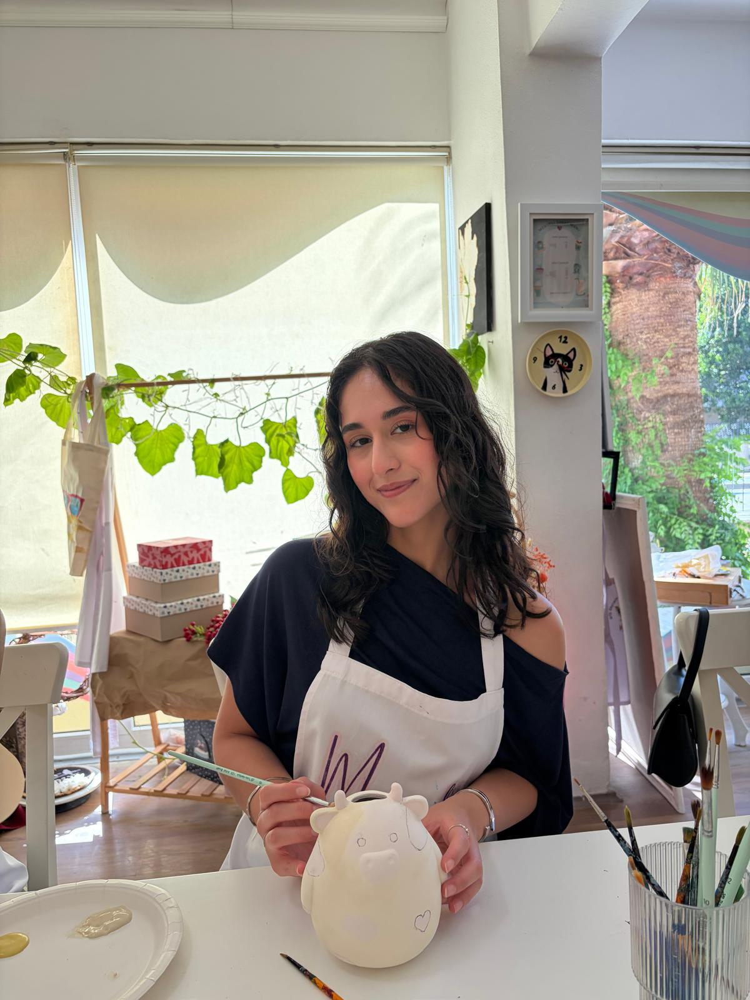

Hello, I'm
Sueda Yaşar
Software Engineering Student
I enjoy learning new technologies and improving my software development skills through real-world projects. Currently, I am focusing on backend development with JavaScript, Node.js, Java, and PostgreSQL.

About Me
I am a fourth-year Software Engineering student who enjoys exploring different areas of technology and improving my skills through practical projects. I am currently focused on backend development and interested in building reliable and useful software solutions.
Education
Istanbul Okan University
Department
Software Engineering
Focus
Backend Development
Community
Core Team Member
Google Developer Student Clubs (2023-2024)
Google Developer Groups on Campus Okan (2024-2025)
Tech Stack
Technologies I use while building web applications.
HTML
CSS
JavaScript
Node.js
Java
PostgreSQL
Git
GitHub
Featured Projects
Here are some of the projects I have developed while improving my software engineering and backend development skills.
API Security Platform
A backend security platform designed to protect APIs from abusive traffic, bot attacks, and excessive requests using rate limiting and IP-based detection.
Product Management API
A RESTful backend API developed to manage product data, perform CRUD operations, and improve backend development skills.
Personal Blog
A backend application developed with Node.js and Express.js to practice server-side development, routing, and application structure.
Netflix Landing Page Clone
A responsive landing page inspired by Netflix, built to practice modern layouts, responsive design, and user interface development.
Experience
My journey through developer communities, internship experience, and professional development programs.
THEADX
Software Engineering Intern
Worked as a Software Engineering Intern focusing on backend development. Designed and implemented robust RESTful APIs, managed server-side logic, and worked with databases to ensure secure, scalable, and efficient data flow while collaborating with the engineering team.
TURKTICARET.NET
Software Engineering Intern
Completed a software engineering internship where I strengthened my HTML, CSS, and JavaScript skills by building web interfaces and practicing modern frontend development while gaining experience with Git and collaborative development workflows.
Microsoft AI Innovators Summer Program
Participant
Participated in Microsoft's AI Innovators Summer Program, gaining hands-on experience with modern AI technologies and practical application development.
Google Developer Groups On Campus Okan
Core Team Member
Continued supporting the developer community by organizing technical events, workshops, and networking opportunities for students.
Google Developer Student Clubs
Core Team Member
Contributed to organizing technical events, workshops, and community activities while collaborating with students interested in software development and technology.
Google Cloud Essentials Boostcamp
Participant
Completed the Google Cloud Essentials Boostcamp organized by Istanbul Data Science Academy, gaining hands-on experience with Google Cloud Platform fundamentals, networking, Cloud Storage, Cloud SQL, and Cloud Run.
Contact Me
Feel free to contact me for internship opportunities, collaborations, or software development projects.